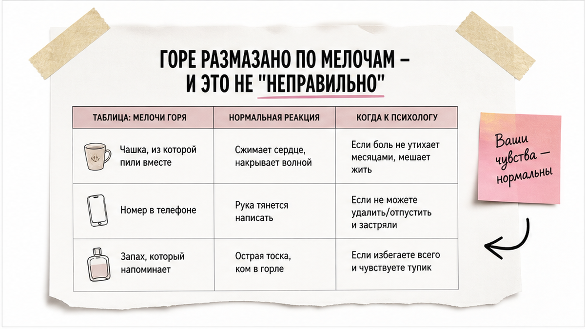
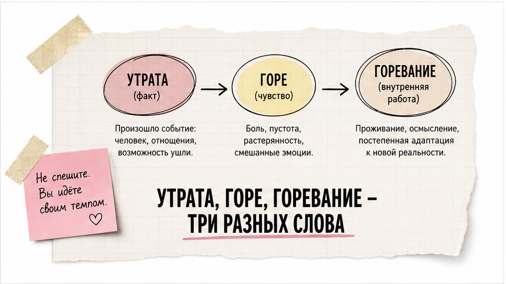
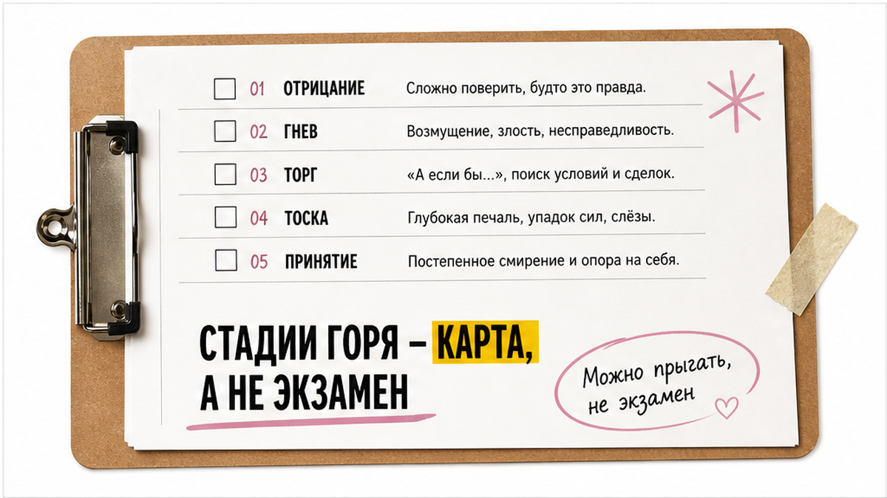

Чашка на столе остывает. В телефоне висит мамин номер. Вы уже знаете, что трубку никто не возьмёт. Прошло четыре месяца. На работе вы держитесь. Дома плачете. Подруга говорит: "Ты же уже должна была отпустить". Внутри сжимается. Стыд. Вина за каждую минуту, когда чуть легче. Окружающие шепчут: "время смягчает". А вам всё так же плохо – будто боль сама по себе не проходит. И страшно гуглить "горе утрата психолог" – вдруг со мной что-то не так, раз я не справляюсь сама.
Горе после утраты близкого – нормальная реакция на потерю, а не признак слабости. Психолог нужен, если боль не ослабевает полгода и дольше, нет сил на базовые дела, появляются мысли о нежелании жить или вы чувствуете полное онемение. Терапия не заставляет "отпустить" – она помогает прожить утрату и изменить форму связи с ушедшим.
Я часто слышу это на приёме. Не всегда сразу словом "горе". Чаще – тревога, бессилие, раздражительность. И только потом, в безопасном пространстве, человек называет потерю. На практике так приходит не меньше половины клиентов после утраты. Это не опоздание. Это честность, которая наконец нашла куда лечь.

Утрата редко живёт в одном месте. Она в чашке, которую никто не допивает. В номере, который не удаляют. В привычке набрать перед сном. Анна, 41 год, пришла ко мне не с фразой "я горюю". Сначала – "не сплю, злюсь на всех, на работе как робот". Через несколько встреч выяснилось: мама умерла четыре месяца назад. Она боялась слова "депрессия" в третьей стадии из интернета. Думала, опоздала с помощью.
Горе – не коридор, из которого выходят прежним. "Как раньше" не будет. Задача не отменить любовь. Изменить форму связи с тем, кого больше нет рядом. Волны накрывают на годовщинах, в праздники, от запаха духов. Откат после "хорошего" дня – норма. Не провал. Не "я снова всё испортила".
Утрата – факт. Человека больше нет. Горе – чувство. Любовь, которой некуда деться. Горевание – внутренняя работа: принять реальность, перестроить жизнь вокруг пустоты. Это труд. Не болезнь. Не слабость характера.
Типичная ошибка – ждать, что горе закончится по календарю. "Три месяца прошло – пора собраться". Календарь тут не главный судья. Острая фаза у многих длится от года до полутора. Всплески боли могут приходить годами. Это не значит, что вы застряли навсегда. Значит – связь была настоящей.

В сети любят списки: отрицание, гнев, торг, тоска, принятие. Модель Кюблер-Росс помогает назвать чувства. Не обязывает идти по ступенькам. На практике люди прыгают. Возвращаются. Плачут и злятся в один день. Торг может длиться недели у одних и часы у других.
Ещё одна схема: шок, острое страдание, постепенная реорганизация. Шок – "это неправда". Острое – боль накрывает волнами. Реорганизация – жизнь не "как раньше", но появляются силы на маленькие шаги. Вы не обязаны "дойти до принятия" к дате на могиле. Стадии – язык для себя. Не отчёт для окружающих.
Подруга спрашивает: "Ты на какой стадии?" Можно ответить честно: "Я не на экзамене. Мне сегодня тяжело. Спасибо, что рядом". Этого достаточно.
Большинство людей со временем справляются с поддержкой близких. Но есть сигналы, когда одной "держись" мало. Запишите для себя – без самодиагноза, как ориентир:
| Что происходит | Часто бывает при горе | Повод обсудить с психологом |
|---|---|---|
| Срок и сила боли | Волны боли месяцами, откаты на годовщинах | После 6 месяцев боль только усиливается, нет ни одного "чуть легче" |
| Быт и тело | Плач, усталость, потеря аппетита на время | Нет сил встать, помыться, выйти из дома неделями |
| Чувства | Вина, злость, тоска чередуются | Полное онемение: "ничего не чувствую", как будто жизнь выключена |
| Мысли о жизни | "Хочу к нему/к ней" – без плана | Мысли о нежелании жить, планах причинить себе вред |
| Способы "глушить" | Редкий бокал, сериалы до ночи | Алкоголь, таблетки без врача, полный уход от людей |
Если в правой колонке узнали себя в двух-трёх строках – это не слабость. Это повод позвонить. При мыслях о самоповреждении – срочно к врачу или на линию доверия. Психолог работает с горем. Психиатр – когда нужна медикаментозная поддержка и острая безопасность.
Близкие любят. И часто не знают, как. "Держись". "Он в лучшем мире". "Пора отпустить". Сердце сжимается ещё сильнее. Подруга не обязана быть терапевтом. Психолог – не замена любви. Это отдельное место, где можно не собираться.
На сессии я не "вытягиваю" из боли. Сопровождаю. Помогаю назвать то, что вы прячете за тревогой. Активно слушаю. Задаю вопросы, которые не задают за столом: "Что вы больше всего боитесь забыть?" "Где в теле живёт эта потеря?" Память со временем может стать источником силы. Не сразу. Не по приказу.
Обращение за помощью – не поражение. На практике те, кто приходит раньше, реже доводят себя до выгорания и одиночества. Вы уже несёте тяжёлую ношу. Не обязаны нести её в одиночку.

EMDR – метод, при котором вспоминаете болезненный момент, а я добавляю билатеральную стимуляцию: движения глаз, постукивания, звуки. Цель – снизить "заряд" в теле, чтобы воспоминание не било током каждый раз. Память не стирается. Меняется интенсивность.
Когда утрата травматична – внезапная смерть, тяжёлые образы, вина "я могла иначе", застревание на одном кадре – EMDR часто идёт вместе с разговорной поддержкой. ВОЗ рекомендует trauma-focused подходы при посттравматическом стрессе. При горе формулировки осторожные: исследования продолжаются, но у многих клиентов снижается телесная реакция на воспоминание о прощании, больнице, последнем звонке.
На пробной встрече спрашивают: "Вы заставите меня забыть маму?" Нет. Я не люблю обещать чудеса. EMDR – не про отмену любви. Про то, чтобы тяжёлый образ перестал управлять сном, аппетитом, злостью на близких. Подробнее о методе – на странице EMDR-терапии. Если мешает тревога – можно начать с разговора о тревоге.
Страшно расплакаться и молчать – оба варианта нормальны. Красивый рассказ не нужен. Хватит одной фразы:
Можно принести фото или вопросы – можно и ничего. Пробная 30-минутная встреча онлайн бесплатна: проверить, комфортно ли вам со мной, без обязательства продолжать.
После прочтения вы можете назвать два-три своих симптома из таблицы выше. Понимаете, что горе нелинейно. Знаете, что терапия – не про "заставить отпустить". Если это про вас – следующий шаг простой: один разговор, не экзамен на стойкость.
Окружающие часто боятся вашей боли. Хотят починить. Вредные фразы и мягкая замена:
| Что слышите | Что ранит | Что сказать себе или попросить |
|---|---|---|
| "Скоро забудешь" | Как будто вы слишком медленно горюете | "Мне нужно своё время. Побудь рядом без советов" |
| "Будь сильной" | Слёзы = слабость | "Плач – это тоже сила. Мне не нужно держаться с тобой" |
| "Пора отпустить" | Любовь надо отменить | "Я не отпускаю. Я учусь жить с памятью" |
| "Он в лучшем мире" | Обесценивает вашу тоску | "Мне сейчас больно. Просто обними" |
Вина за облегчение – частый спутник. "Мне на час стало легче – значит, я предала". Нет. Это дыхание посреди волны. Любовь никуда не делась.
Нет давления отпускать по чужому календарю. Связь меняет форму: из "звоню каждый день" в "помню, говорю, живу дальше". Это не предательство. Это продолжение любви без адресата.
Острая фаза у многих – от года до полутора. Всплески на годовщинах и праздниках – норма. Если через полгода боль только растёт и нет сил на базовые дела – обсудите с психологом, не ждите "ещё год".
Разговор помогает назвать чувства и снизить одиночество. EMDR дополнительно работает с телесным зарядом тяжёлого воспоминания. Память остаётся. Меняется реакция тела на неё.
Да. Иногда нужна и личная сессия, и семейная – чтобы перестать ранить друг друга фразами "соберись". Детям после утраты тоже нужен свой язык поддержки. Отдельно от взрослых.
Горе – не ярлык. На первой встрече мы говорим о вашей истории, не о "правильности" чувств. Диагноз, если он вообще обсуждается, – инструмент для плана помощи. Не приговор.
Да. Нужны приватное место, стабильная связь, возможность поплакать без страха, что вас услышат соседи. Многие после утраты как раз не хотят ехать через весь город. Онлайн снижает барьер.
При мыслях о самоповреждении, планах уйти из жизни, полной неспособности есть и спать несколько дней, тяжёлой интоксикации алкоголем или таблетками. Психолог – сопровождение горя. Врач – когда вопрос о безопасности и медикаментах.
Если после прочтения хочется не гуглить дальше, а просто поговорить – запишитесь на бесплатную 30-минутную пробную сессию. Записаться на пробную сессию.
Любовь не обязана исчезнуть, чтобы вы снова начали дышать. Иногда хватает одного человека, рядом с которым не нужно делать вид, что держитесь.
Ещё больше полезного – в Telegram и в МАКС.
Блог о психологии Натальи Морозовой, психолога, ЕМДР терапевта